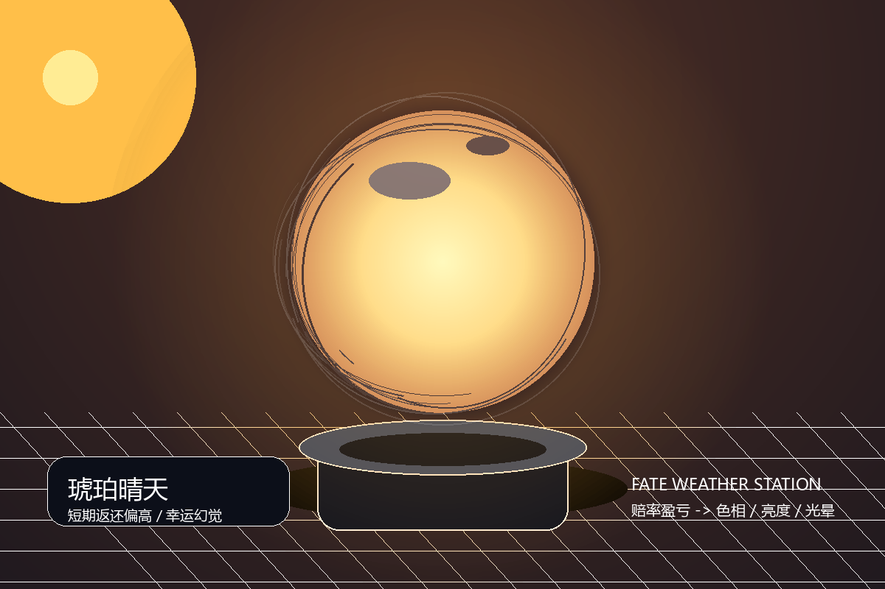
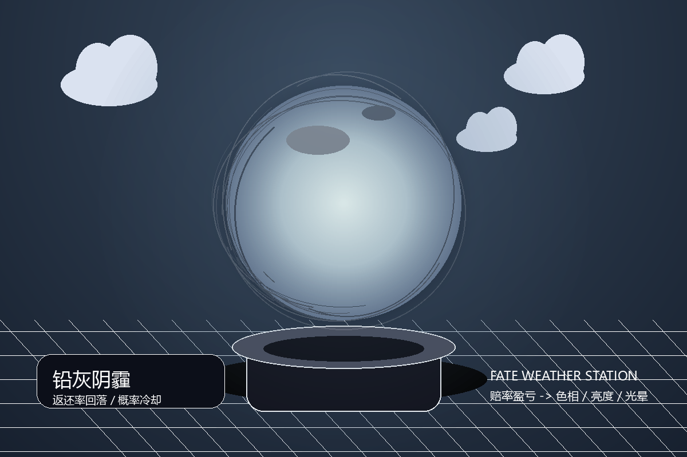
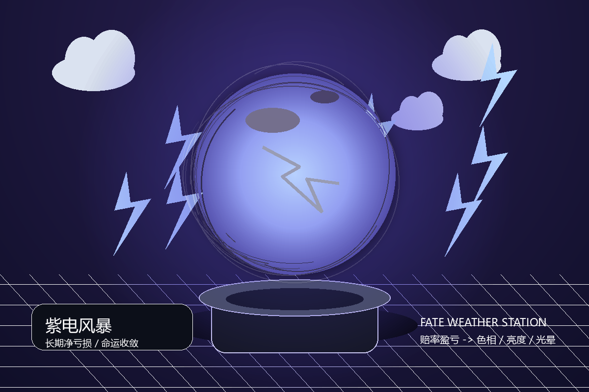

FATE WEATHER STATION虚拟演示版
命运气象站
赔率表不是天气预报，是命运定价单。
重要说明：本页面为课程作品的虚拟交互原型，所有金额、赔率、开奖均为艺术化模拟，不涉及真实购买、支付或兑奖。
足球计算器☰
根据参考截图重构的移动端投注界面：选择赔率 → 虚拟投注 → 模拟开奖。
模拟开奖
命运气象站
把所有参与者的真实盈亏，转译为一颗气象球的颜色与风暴强度。
未观测
等待第一笔虚拟投注。球体现在处于未观测状态。
实时数据面板 由投注与开奖自动计算
累计投注总额
¥0
累计返还总额
¥0
净盈亏
¥0
返还率
0%
-¥5000 亏损风暴0+¥5000 暖色晴天
透明映射公式 不暗调结果
净盈亏 = Σ(中奖金额) - Σ(投注金额)
返还率 = Σ(中奖金额) / Σ(投注金额) × 100%
色相 = 45° + (1 - 返还率) × 215°
亮度 = 25% + 返还率 × 45%
光晕强度 = |净盈亏| / 5000 × 100%
返还率 = Σ(中奖金额) / Σ(投注金额) × 100%
色相 = 45° + (1 - 返还率) × 215°
亮度 = 25% + 返还率 × 45%
光晕强度 = |净盈亏| / 5000 × 100%
历史轨迹 最近15轮开奖
实体装置概念图 本次提交为非装置部分

琥珀晴天
少量样本中返还率偏高时，球体呈暖色高亮，制造短暂的幸运错觉。

铅灰阴霾
样本增加后返还率回落，颜色向灰蓝过渡，显示概率的冷却。

紫电风暴
长期净亏损扩大时，光晕和闪电增强，呈现赔率结构的宿命感。